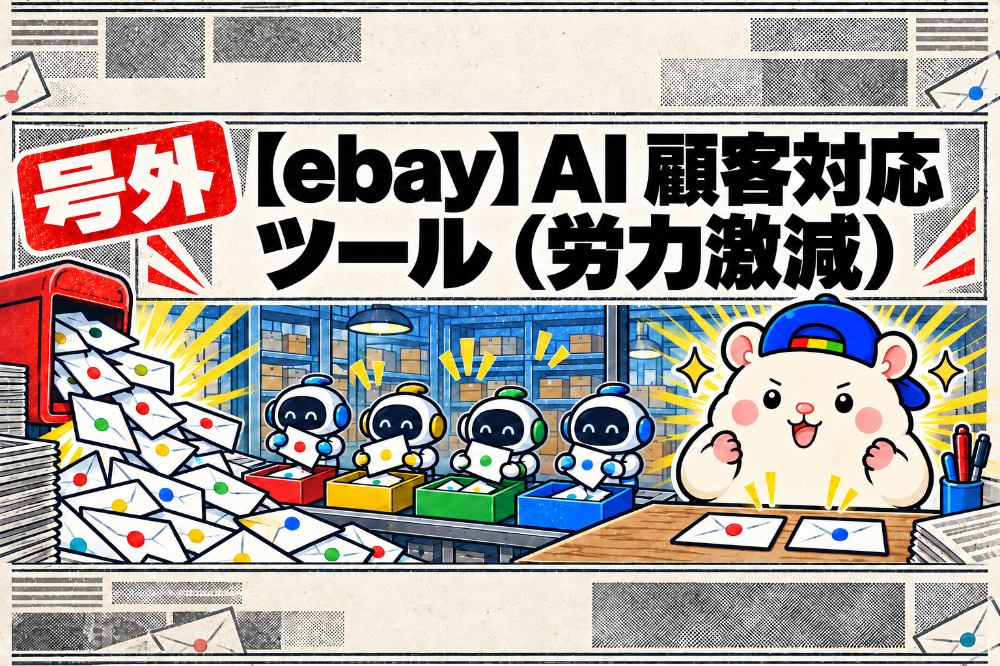
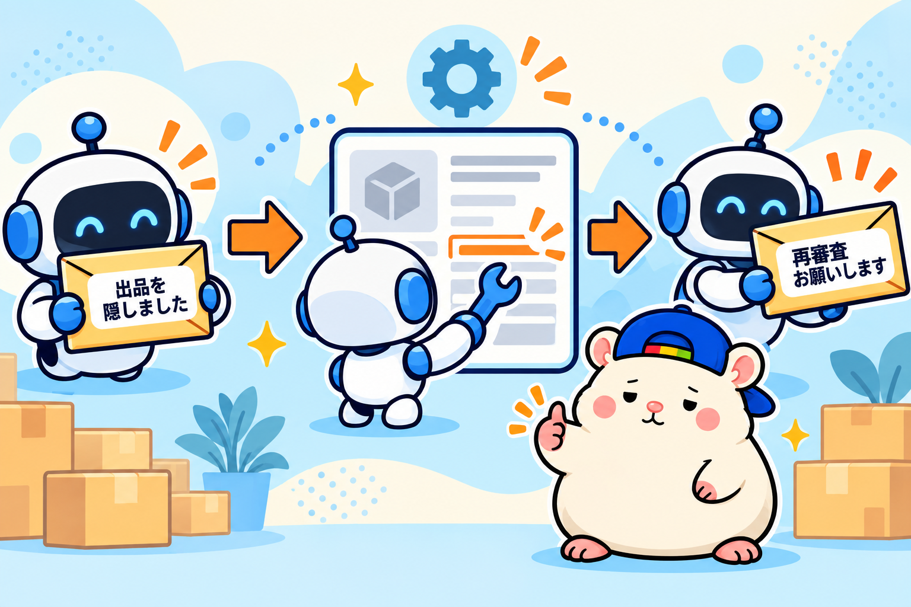

ぼくのeBayストアには、1日平均13通のメッセージが届きます。
買い手からの質問、値下げのお願い、お礼。
それにeBayからの通知。
ぜんぶ読んでいたころ、これだけで1時間消えていました。
しかも英語です。
いまは、ぼくが読むのは1日2通くらい。
残りは社員(AI)が受け取って、確認して、返信しています。
今日はその仕組みを書きます。
メッセージは、4つしかない
届くメッセージを並べてみると、実は4種類しかありません。
- よくある質問 :「まだ在庫ある?」「発送はいつ?」「この色は青?」「値下げできる?」
- 調べれば分かる質問 :「これはこれに付けられる?」「付属品は?」
- 返信しなくていいもの :「ありがとう!」「届いたよ」の1行
- eBayからの通知 :「売れました」「発送してね」「出品を非表示にしました」
そして最後にもう1つ。
人間が判断しないといけないもの。
返品したい、壊れて届いた、値引きの幅をどうするか。
この5つ目だけが、ぼくの仕事です。
あとの4つは、社員の仕事にしました。
社員(AI)がやっていること
顧客対応担当AIは、メッセージを受け取ったらまず調べます。
台帳の商品情報、仕入元の説明文、出品写真。
必要なら現物の写真を拡大して見ます。
そのうえで、こう分けます。
答えが確認できた質問は、そのまま返信します。
「はい、この商品の色は青です。出品写真の3枚目で色が分かります」
こういう返信は、ぼくが見なくても間違えようがありません。
値下げの打診は、店のルールどおりに返します。
初回は定価の3%引きを提示する。
最低ラインは絶対に割らない。
これはもう決まっているので、ぼくが考える意味がありません。
お礼だけのメッセージは、お礼で返して終わりです。
会話が終わっているものは、返信せずに「対応済み」にします。
返品・不具合・返金は、社員は送りません。
ここは金額の判断が入るので、店長(人間)の仕事として残します。
eBayからの通知も、社員(AI)が対応する

ここが今回いちばん変わったところです。
eBayからの通知は、1日に何通も来ます。
「売れました」「入金がありました」「キャンセルが完了しました」。
読む必要のないものは、開かずに消します。
台帳に反映が必要なものは、反映して消します。
そして先週、こんな通知が20通以上、続けて届きました。
「あなたの出品の一部を、ポリシー違反の疑いで隠しました」
以前のぼくなら、管理画面を開いて、1件ずつ探して、説明文を直していました。
半日仕事です。
いまは社員がやります。
該当の説明文を読んで、原因になりそうな文章を外して、eBayに再審査をお願いする。
ここまで、通知が届いてから数分です。
ぼくはあとで「○件直しておきました」というAIの記録を読んだだけでした。
ぼくの仕事は、確認ボタン
じゃあ、ぼくに残るのは何か。
返品したいという連絡。
壊れて届いたという連絡。
値引きの幅を決める判断。
この手のメッセージだけが、ツール画面に残ります。
しかも、返信案はもうできています。
たとえば「壊れて届いた」なら、
「申し訳ありません。①症状の写真 ②外箱の写真 ③起きた状況を教えてください」という初動の返信が、日本語と英語で入っています。
社員(AI)が判断に迷ったところは、「ここを確認してください」と一言ついています。
ぼくは、読んで、必要なら直して、送信ボタンを押す。
それだけです。
初日の結果
この仕組みを入れた初日の数字です。
直近6日ぶんの受信、60通。
うちeBayからの通知が23通、買い手からが37通。
社員が処理したもの:
- eBay通知23通→ぜんぶ自動で処理。ぼくが開いたものはゼロ
- 自動返信12通(お礼への返礼、色の質問、値下げの打診など)
- 返信不要と判断して閉じたもの1通
- 非表示にされていた出品5件→修正して再審査へ
ぼくの対応として残ったもの: 2通。
送った文面は、ぜんぶ見られる
「勝手に返信して大丈夫なの?」と思うかもしれません。
だから、送った文面はぜんぶ記録に残ります。
買い手が何を言って、社員が何を返したか。
日本語と英語の両方で。
自動返信の種類ごとにスイッチもあります。
「値下げの返信だけは自分で見たい」なら、そこだけ切れます。
初日は夕方に記録を一通り読みました。
直したいものは、ありませんでした。
まとめ
メッセージ対応は、4つに分けて社員(AI)の仕事にしています。
- よくある質問→調べて返す
- 調べれば分かる質問→調べて返す
- 返信不要→閉じる
- eBayの通知→対応して閉じる
残った「人間が判断するもの」だけが、返信案つきで机にのこる。
1日13通が、2通になりました。
台帳に書いておこう。
この仕分けの仕組みは、教科書の付録に入れます。
欲しい人は、教科書からどうぞ。
▼中の人🏠(レンタルスペース23部屋・売上1.5億)のレンスペ実録
https://note.com/rentalspace_kiku
▼ブログ(eBay×レンスペ、全記事まとめ)
https://rental-space.net
▼この店のやり方は、ぜんぶ1冊にまとめてあります
リサーチ・出品・値付け・顧客対応まで、初月利益18万6,673円を出した実店舗の記録と手順を全部書いた教科書です。
読んだその日から、AI社員の作り方をそのまま真似できます。
『AI × eBay輸出の教科書 — 梱包以外、ぜんぶAI』(公式サイト最安 ¥8,800)
https://rental-space.net/kyokasho/ebay/
※先行5部限定の価格です。以降、2,000円ずつ値上げします。